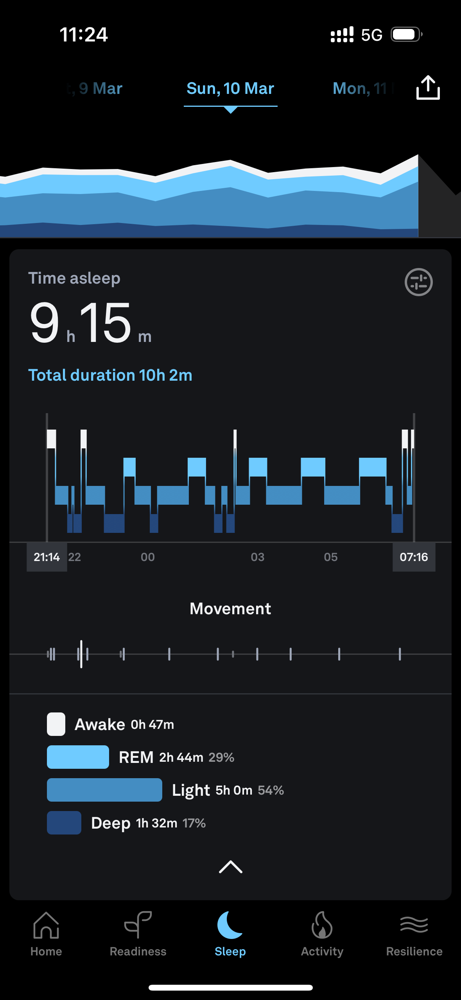
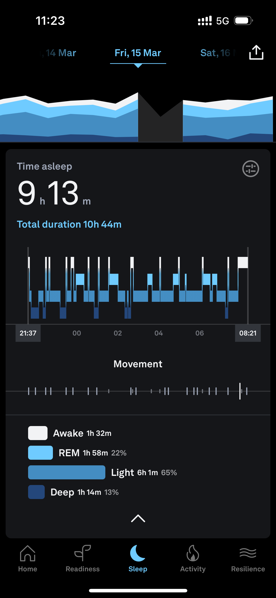

Andrea Musso, Elizabeth Stockinger and Laura Alessandretti
with important repercussions on their sleep



What are the main drivers of these differences?
Data
- NetMob Data Challenge
- INSEE
- Individual App Usage Data


\[ RCA_{lt}^{ca} = \alpha_t I_l + \sum_a \beta_t d_a + C_l \]
What does not drive the differences
- Noise
- Commute times
- Amenities
Current work
- Absolute differences
- Closing the loop